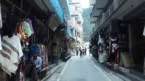
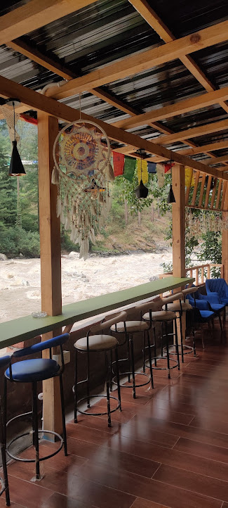
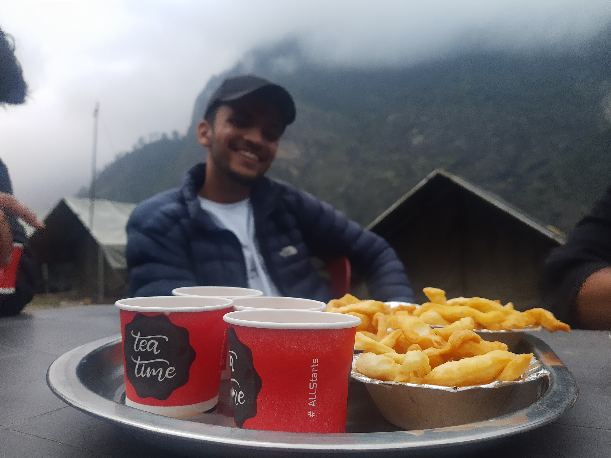
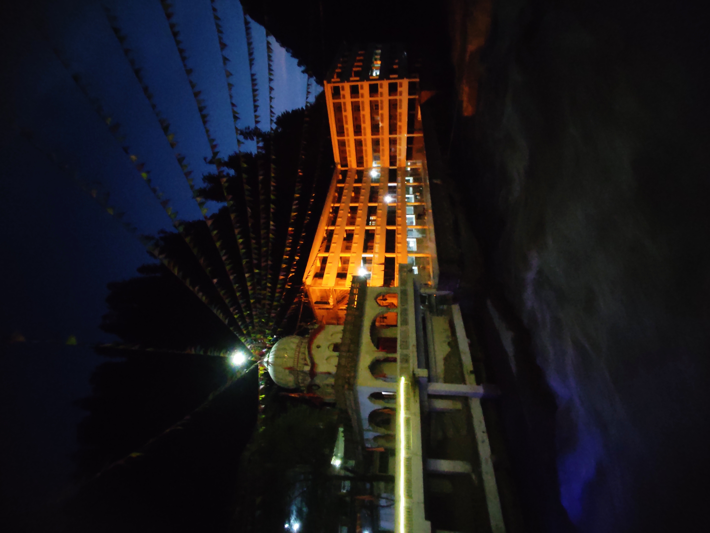

Discover The Beautiful World
Kasol-Kheerganga
Day 0
Drive from Delhi to Kasol
The group will assemble at the pickup point. Afterward, you'll be introduced to the team captains and the whole group. We'll start for an overnight journey towards Kasol. We'll take a mid-way stoppage for dinner. (Pickup point is Majnu Ka Tila - Tentative).Day 1
Kasol Sightseeing Day
We'll reach Kasol in the afternoon. Post-check-in, we'll have lunch. After that, relax for the rest of the afternoon. In the evening, start for a small hike to Chalal Village. Afterward, the group will be free for cafe hopping and leisure activities. We'll get back to our hotels/campsite for dinner followed by an overnight stay in Kasol.



Day 2
Kasol to Kheerganga
We'll have an early breakfast followed by a Trek Briefing Session from the trek leader. Afterward, we'll head out for Barshaini, which is the starting point for the trek. Upon reaching, we'll start the Kheerganga Trek. Upon reaching the top, we'll check into our campsite. Participants are advised to go for a Hotspring Bath, as it's quite relaxing. We'll assemble back into our camps for dinner followed by an overnight stay in Kheerganga Top.

Day 3
Back To Kasol | Manikaran Gurudwara
We'll have an early breakfast. Afterward, we'll start to trek back to Barshaini from Kheerganga. Upon reaching Barshaini, we'll head out for Kasol. Enroute we’ll visit Manikaran Gurudwara (if time permits). In the evening, we'll take an overnight bus from Kasol to Delhi. The group reached Delhi early in the morning. The Tour Ends with a set of happy memories and more.

Your adventurous journey to Kasol-Kheerganga comes to an end, leaving you with unforgettable memories of natural beauty and trekking experiences.